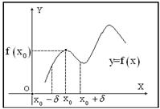

18.1.4. Достаточные условия экстремума
Пусть
1)  – критическая точка для функции
– критическая точка для функции  2) функция непрерывна в точке
2) функция непрерывна в точке  3) ,
3) ,  ,
,
то есть при переходе
,
,
то есть при переходе  через точку производная меняет
знак с плюса на минус. Тогда в точке функция имеет максимум.
через точку производная меняет
знак с плюса на минус. Тогда в точке функция имеет максимум.
– критическая точка для функции
2) функция непрерывна в точке
3) , ,
,
то есть при переходе через точку производная меняет
знак с плюса на минус. Тогда в точке функция имеет максимум.
Так как по условию в
интервале  , то на отрезке функция возрастает;
так как в интервале
, то на отрезке функция возрастает;
так как в интервале  ,
то на отрезке функция убывает. Следовательно, есть наибольшее значение функции в окрестности
,
то на отрезке функция убывает. Следовательно, есть наибольшее значение функции в окрестности  точки ,
а это означает, что есть локальный максимум
функции .
точки ,
а это означает, что есть локальный максимум
функции .
, то на отрезке функция возрастает;
так как в интервале ,
то на отрезке функция убывает. Следовательно, есть наибольшее значение функции в окрестности точки ,
а это означает, что есть локальный максимум
функции .Пусть – критическая точка для
функции и функция непрерывна
в точке и существует такое  , что для всех из интервала производная
, а для всех из
интервала имеем ,
то есть при переходе через точку производная
, что для всех из интервала производная
, а для всех из
интервала имеем ,
то есть при переходе через точку производная  меняет
знак с минуса на плюс. Тогда в точке функция имеет минимум.
меняет
знак с минуса на плюс. Тогда в точке функция имеет минимум.
– критическая точка для
функции и функция непрерывна
в точке и существует такое , что для всех из интервала производная
, а для всех из
интервала имеем ,
то есть при переходе через точку производная меняет
знак с минуса на плюс. Тогда в точке функция имеет минимум.